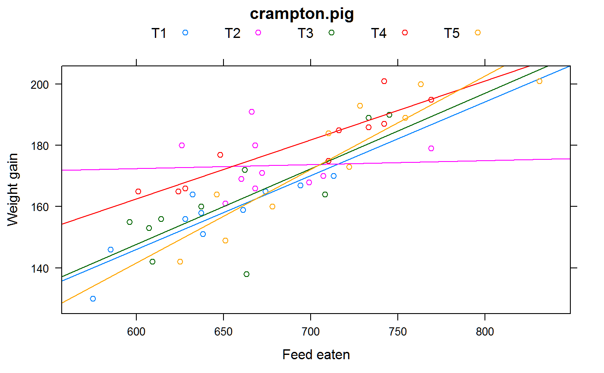

crampton.pig.RdWeight gain in pigs for different treatments, with initial weight and feed eaten as covariates.
data("crampton.pig")
A data frame with 50 observations on the following 5 variables.
treatmentfeed treatment
repreplicate
weight1initial weight
feedfeed eaten
weight2final weight
A study of the effect of initial weight and feed eaten on the weight gaining ability of pigs with different feed treatments.
The data are extracted from Ostle. It is not clear that 'replicate' is actually a blocking replicate as opposed to a repeated measurement. The original source document needs to be consulted.
Crampton, EW and Hopkins, JW. (1934). The Use of the Method of Partial Regression in the Analysis of Comparative Feeding Trial Data, Part II. The Journal of Nutrition, 8, 113-123.
Bernard Ostle. Statistics in Research
Goulen. Methods of Statistical Analysis, 1st ed. Page 256-259.
library(agridat) data(crampton.pig) dat <- crampton.pig dat <- transform(dat, gain=weight2-weight1) libs(lattice) # Trt 4 looks best xyplot(gain ~ feed, dat, group=treatment, type=c('p','r'), auto.key=list(columns=5), xlab="Feed eaten", ylab="Weight gain", main="crampton.pig")#> Analysis of Variance Table #> #> Response: weight2 #> Df Sum Sq Mean Sq F value Pr(>F) #> treatment 4 5741.7 1435.43 4.9662 0.002718 ** #> rep 9 2487.2 276.36 0.9561 0.490957 #> Residuals 36 10405.5 289.04 #> --- #> Signif. codes: 0 '***' 0.001 '**' 0.01 '*' 0.05 '.' 0.1 ' ' 1#> Analysis of Variance Table #> #> Response: weight2 #> Df Sum Sq Mean Sq F value Pr(>F) #> treatment 4 5741.7 1435.4 13.9211 7.975e-07 *** #> rep 9 2487.2 276.4 2.6802 0.01805 * #> weight1 1 2724.2 2724.2 26.4201 1.131e-05 *** #> feed 1 4175.5 4175.5 40.4945 2.916e-07 *** #> Residuals 34 3505.8 103.1 #> --- #> Signif. codes: 0 '***' 0.001 '**' 0.01 '*' 0.05 '.' 0.1 ' ' 1# Remove treatment, test this nested model for significant treatments m3 <- lm(weight2 ~ rep + weight1 + feed, data=dat) anova(m2,m3) # p-value .07. F=2.34 matches Ostle#> Analysis of Variance Table #> #> Model 1: weight2 ~ treatment + rep + weight1 + feed #> Model 2: weight2 ~ rep + weight1 + feed #> Res.Df RSS Df Sum of Sq F Pr(>F) #> 1 34 3505.8 #> 2 38 4471.7 -4 -965.88 2.3418 0.07462 . #> --- #> Signif. codes: 0 '***' 0.001 '**' 0.01 '*' 0.05 '.' 0.1 ' ' 1